Addition
1. Basic Concepts: Iterative Combinational Circuits
Arithmetic functions operate on binary vectors and typically use the same subfunction in each bit position.
-
Cell: A subfunction block designed for a single operation.
-
Iterative Array: An array of interconnected cells. It can be implemented in a single dimension (1D) or multiple dimensions.
-
Design Principle: Design a functional block for the subfunction (Cell) and repeat it to obtain the overall functional block.
2. 1-Bit Adders
Half-Adder
A 2-input, 1-bit width binary adder that adds two bits to produce a two-bit sum.
-
Inputs: A, B
-
Outputs: Sum (\(F\) or \(S\)), Carry-out (\(C_{out}\))
-
Equations:
-
Sum: \(F = A \oplus B\)
-
Carry: \(C_{out} = A \cdot B\)
-
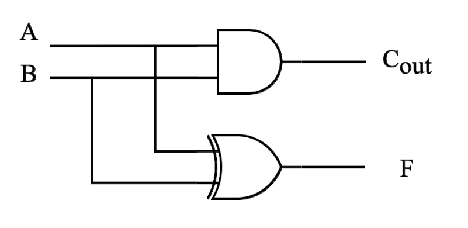
Full-Adder (FA)
Similar to a half-adder, but includes a carry-in bit (\(C_{in}\)) from lower stages.
-
Inputs: A, B, \(C_{in}\)
-
Outputs: Sum (\(F\)), Carry-out (\(C_{out}\))
-
Characteristics:
-
If \(C_{in} = 0\), it behaves exactly like a half-adder.
-
Can be constructed using two Half-Adders and an OR gate.
-
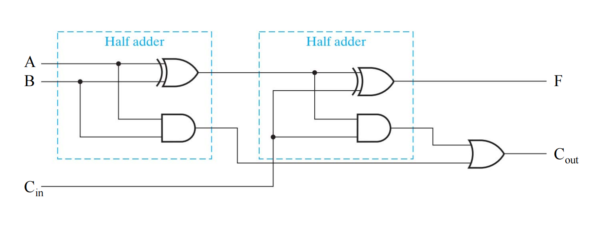
- 图片来自刘海风老师授课课件
3. Multibit Carry Propagate Adders (CPA)
To add multibit numbers, 1-bit adders are combined. There is a general trade-off in CPA design: Faster adders require more hardware.
Types of CPAs:
-
Ripple-Carry Adder (RCA) – Slow
-
Carry Skip Adder
-
Carry Select Adder
-
Carry-Lookahead Adder (CLA) – Fast
-
Prefix Adder – Fast
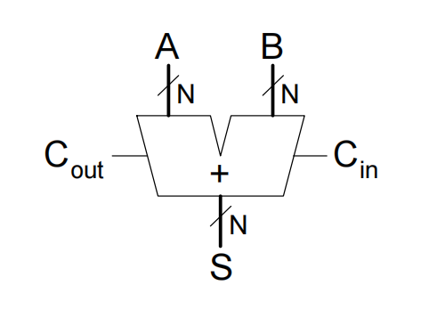
4. Ripple-Carry Adder (RCA)
-
Design: Chains multiple 1-bit Full Adders together. The carry-out of one stage is connected to the carry-in of the next.
-
Mechanism: The carry "ripples" sequentially through the entire chain from the least significant bit to the most significant bit.
-
Disadvantage: Slow. The higher bits must wait for the carry to propagate through all lower bits.
-
Delay Calculation:
\[ t_{ripple} = N \cdot t_{FA} \](Where \(t_{FA}\) is the delay of a 1-bit full adder and \(N\) is the number of bits).
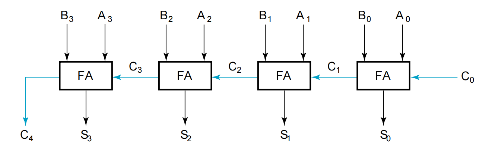
5. Carry Lookahead Adder (CLA)
The CLA accelerates addition by computing the carry signals in advance, based on the input signals, rather than waiting for them to ripple.
Core Equations
-
Generate (\(G_i\)): \(G_i = A_i \cdot B_i\). If both inputs are 1, a carry is generated regardless of \(C_i\).
-
Propagate (\(P_i\)): \(P_i = A_i \oplus B_i\). If the inputs are different, a carry-in of 1 will be propagated to the carry-out.
-
Sum: \(S_i = P_i \oplus C_i\)
-
Carry: \(C_{i+1} = G_i + P_i \cdot C_i\)
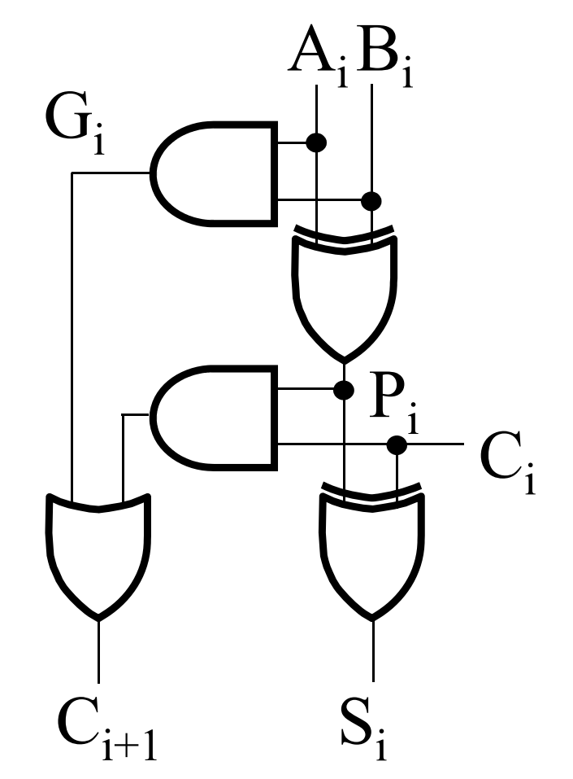
- 图片来自刘海风老师授课课件
Carry Expansion (4-Bit Example)
By recursively expanding the carry equation, we remove the dependency on intermediate carries:
-
\(C_1 = G_0 + P_0 \cdot C_0\)
-
\(C_2 = G_1 + P_1 \cdot C_1 = G_1 + P_1 \cdot G_0 + P_1 \cdot P_0 \cdot C_0\)
-
\(C_3 = G_2 + P_2 \cdot G_1 + P_2 \cdot P_1 \cdot G_0 + P_2 \cdot P_1 \cdot P_0 \cdot C_0\)
-
\(C_4 = G_3 + P_3 \cdot G_2 + P_3 \cdot P_2 \cdot G_1 + P_3 \cdot P_2 \cdot P_1 \cdot G_0 + P_3 \cdot P_2 \cdot P_1 \cdot P_0 \cdot C_0\)
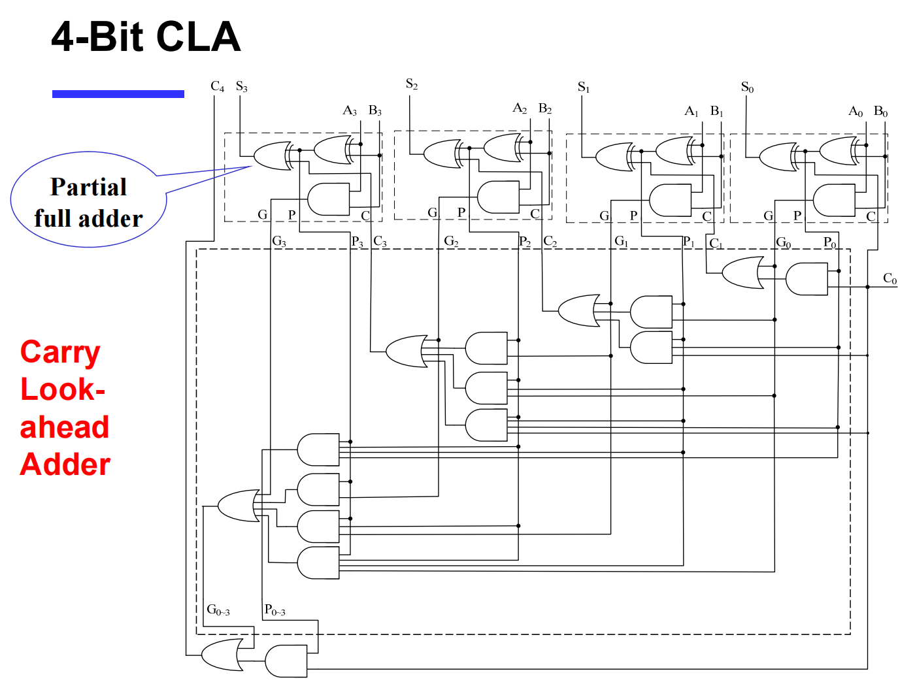
- 图片来自刘海风老师授课课件
Group Carry Lookahead Logic
Extending the flat equations above to 16 or 32 bits is unfeasible due to the limited fan-in of actual logic gates. To solve this, the concept is extended into groups (e.g., 4-bit blocks):
-
Group Generate (\(G_{0 \sim 3}\)): \(G_3 + P_3 \cdot G_2 + P_3 \cdot P_2 \cdot G_1 + P_3 \cdot P_2 \cdot P_1 \cdot G_0\)
-
Group Propagate (\(P_{0 \sim 3}\)): \(P_3 \cdot P_2 \cdot P_1 \cdot P_0\)
-
New Group Carry: \(C_4 = G_{0 \sim 3} + P_{0 \sim 3} \cdot C_0\)
Using this hierarchy, a 16-bit adder can be built using multiple 4-bit CLAs.
-
\(C_8 = G_{4 \sim 7} + P_{4 \sim 7} \cdot C_4\)
-
\(C_{12} = G_{8 \sim 11} + P_{8 \sim 11} \cdot C_8\)
-
\(C_{16} = G_{12 \sim 15} + P_{12 \sim 15} \cdot C_{12}\)
Delay Example: 16-bit CLA vs. RCA
Assuming gate delays: NOT = 1, XOR (Isolated AND) = 3, AND-OR = 2.
-
Ripple Carry Adder Delay: \(3 + 15 \times 2 + 3 = 36\)
-
Carry Lookahead Adder Delay: \(3 + 3 \times 2 + 3 = 12\)
(CLA is significantly faster than RCA).
6. Carry Skip & Carry Select Adders
Carry Skip Adder
-
Concept: Accelerates the carry by "skipping" the interior blocks if the entire block propagates the carry.
-
Optimization: Achieves optimal speed with a non-equal distribution of block lengths.
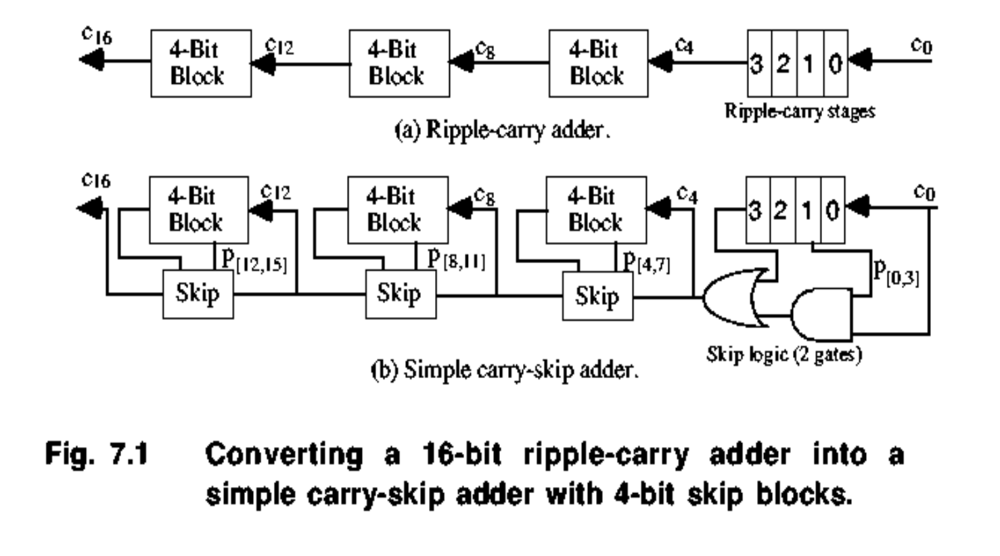
Carry Select Adder (CSA)
-
Concept: Divides the adder into blocks. For the upper bits, it uses two adders in parallel—one assuming the carry-in is
0and the other assuming it is1. -
Selection: Once the actual carry-out from the lower bits is evaluated, a 2:1 Multiplexer (Mux) selects the correct pre-computed sum for the upper bits.
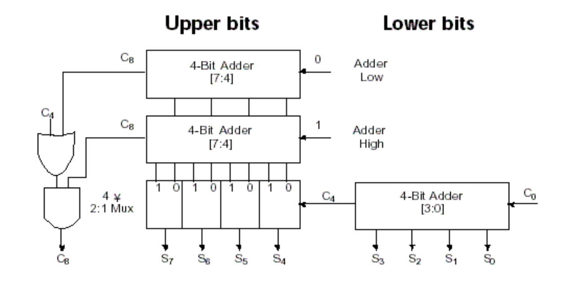
7. Prefix Adder
A highly efficient tree-based adder that computes the carry for each column first, then computes the sum.
Process
-
Computes Generate (\(G\)) and Propagate (\(P\)) for individual bits.
-
Computes block \(G\) and \(P\) over expanding ranges (1-bit, 2-bit, 4-bit, 8-bit, etc.) using a tree structure until all \(G_i\) (carry-ins) are known.
-
Takes \(\log_2 N\) stages.
-
Final Sum: \(S_i = (A_i \oplus B_i) \oplus C_{i-1}\) (where \(C_{i-1} = G_{i-1:-1}\) and \(G_{-1:-1} = C_{in}\)).
Block Equations (spanning bits \(i\) to \(j\), split at \(k\))
-
Block Generate: \(G_{i:j} = G_{i:k} + P_{i:k} \cdot G_{k-1:j}\)
- Meaning: Block \(i:j\) generates a carry if the upper part (\(i:k\)) generates a carry, OR if the upper part propagates a carry generated in the lower part (\(k-1:j\)).
-
Block Propagate: \(P_{i:j} = P_{i:k} \cdot P_{k-1:j}\)
- Meaning: Block \(i:j\) propagates a carry only if both the upper and lower parts propagate the carry.
Prefix Adder Delay Calculation
Where:
-
\(t_{pg}\): Delay to produce the initial \(P_i, G_i\) (AND or OR gate).
-
\(t_{pg\_prefix}\): Delay of the internal prefix cell (AND-OR gate).
-
\(t_{XOR}\): Delay of the final XOR gate to compute the sum.
Subtraction
1. Subtraction & 2's Complement Arithmetic
Both addition and subtraction can be handled using 2's complement representation, which allows for a unified hardware implementation (using the same adder circuit).
Unsigned Subtraction via 2's Complement
For \(n\)-digit, unsigned numbers \(M\) and \(N\), finding \(M - N\) in base 2 can be achieved by adding the 2's complement of the subtrahend (\(N\)) to the minuend (\(M\)):
-
Case 1: \(M \ge N\)
-
The sum produces an end carry (\(r^n\)).
-
Rule: The end carry is discarded, and the remaining bits represent the correct result (\(M - N\)).
-
-
Case 2: \(M < N\)
-
The sum does not produce an end carry. The sum is equal to \(2^n - (N - M)\), which is the 2's complement of \((N - M)\).
-
Rule: To obtain the true result \(-(N - M)\), take the 2's complement of the sum and place a negative sign (\(-\)) to its left.
-
Unified Hardware: \(n\)-Bit Binary Adder-Subtractor
A standard Full Adder (FA) chain can be adapted to perform both addition and subtraction using an input selection bit S:
-
The subtrahend bits (\(B_i\)) are passed through XOR gates with the selection bit S.
-
When S = 0 (Addition): The XOR gates pass \(B\) unchanged. The carry-in (\(C_0\)) is 0. Operation: \(A + B\).
-
When S = 1 (Subtraction): The XOR gates invert \(B\) (1's complement), and the carry-in (\(C_0\)) is set to 1. This effectively computes \(A + (1\text{'s complement of } B) + 1\), which equals \(A + (2\text{'s complement of } B)\).
-
Note: This circuit can be used for both unsigned numbers and signed 2's complement numbers.
2. Carry vs. Overflow
While adding/subtracting numbers, the sum may exceed the fixed number of bits available, leading to out-of-range errors. The terminology depends on the data type:
-
Carry is important for Unsigned integers:
- Indicates that the unsigned sum is out of range (either \(< 0\) or \(>\) maximum unsigned \(n\)-bit value).
-
Overflow is important for Signed integers:
- Indicates that the signed sum is out of range.
3. Detecting Signed Overflow
Unlike unsigned numbers, the carry-out alone cannot be used to detect overflow for signed numbers. There are situations where a carry-out of 1 occurs without overflow, and a carry-out of 0 occurs with overflow.
Rules for Signed Overflow Occurrence:
-
Overflow occurs only when adding two numbers with the same sign, and the result has a different sign.
-
Adding two positive numbers yields a negative sum.
-
Adding two negative numbers yields a positive sum.
-
-
Overflow cannot occur when adding a positive number to a negative number.
Mathematical Overflow Detection (\(V\)):
For signed numbers, overflow (\(V\)) is detected by observing the carry-in to the sign bit (\(C_{n-1}\)) and the carry-out of the sign bit (\(C_n\)). If they are different, an overflow has occurred.
4. Important Status Flags
An ALU outputs various status flags (usually stored in a register) to indicate the characteristics of the most recent operation.
-
Zero Flag (ZF):
-
ZF = 1means the result of the operation is \(0\). -
Valid for both unsigned and signed operations.
-
-
Sign Flag / Negative Flag (SF/NF):
-
Indicates the sign of the result (matches the most significant bit, \(S_{n-1}\)).
-
Valid for signed operations.
-
-
Carry / Borrow Flag (CF):
-
CF = 1indicates a Carry for addition (\(C_{out}\)), or a Borrow for subtraction (\(\sim C_{out}\)). -
Valid for unsigned operations.
-
Note: For unsigned addition, a carry of 1 indicates overflow. For unsigned subtraction, a carry of 0 indicates a correction is required (underflow).
-
-
Overflow Flag (OF):
-
Indicates signed overflow (using the \(V = C_n \oplus C_{n-1}\) logic).
-
Valid for signed operations.
-
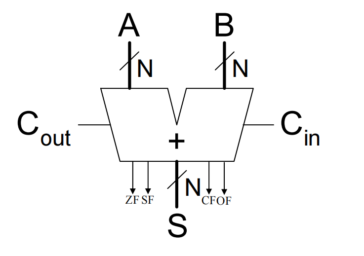
Arithmetic logic unit (ALU)
1. The Arithmetic Logic Unit (ALU)
What is an ALU?
The Arithmetic Logic Unit (ALU) is considered the "heart" of a processor. It performs a variety of arithmetic and logical operations. Nearly all other components in the CPU exist to support the functions of the ALU.
-
Core Architecture: The ALU is typically constructed using two main methodologies:
-
Extended the Adder: Building upon basic adder circuits to include logical functions.
-
Parallel Redundant Select: Computing multiple operations (like AND, OR, ADD) in parallel and using a multiplexer (MUX) to select the desired output based on control signals.
-
Simple Example: 1-Bit ALU (3 Operations)
A basic 1-bit ALU can be designed to perform AND, OR, and ADD operations using a 2-bit control signal (\(F_{1:0}\)).
-
Function Table:
-
00:A & B(Logical AND) -
01:A | B(Logical OR) -
10:A + B(Arithmetic Addition) -
11: Not used
-
-
Hardware Implementation: The inputs \(A\) and \(B\) are fed simultaneously into an AND gate, an OR gate, and a 1-bit Full Adder. A 4-to-1 Multiplexer uses the control signal to select which gate's output becomes the final result.
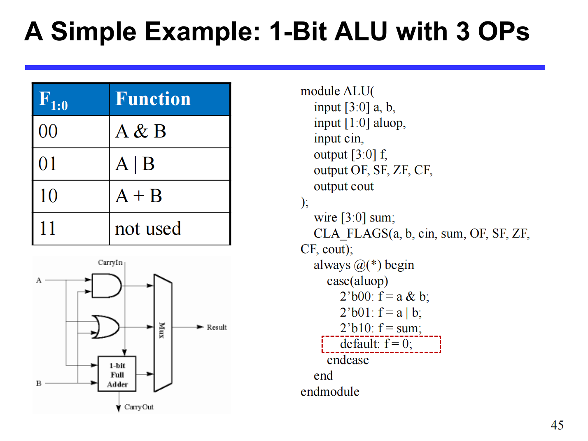
N-Bit ALU (8 Operations)
An N-bit ALU scales this concept up, using a 3-bit control line to select among 8 different operations.
-
Common Control Mappings:
-
000: AND -
001: OR -
010: ADD -
110: SUB (Subtract) -
111: SLT (Set Less Than) -
100: NOR -
101: SRL (Shift Right Logical) -
011: XOR
-
2. The "Set Less Than" (SLT) Operation
The SLT instruction (e.g., slt rd, rs, rt) is used to compare two values.
-
Logic: If \(rs < rt\), then the destination register \(rd = 1\). Otherwise, \(rd = 0\).
-
Output Format: For the 32-bit destination register, all bits will be
0except for the least significant bit (LSB), which will be1if the condition is met (producing0x00000001).
Hardware Implementation of SLT
SLT is essentially a subtraction operation (\(rs - rt\)) where the hardware checks if the result is negative.
-
Subtraction: The ALU computes \(A - B\) (by taking the 2's complement of \(B\) and adding it to \(A\)).
-
Using the Sign Bit: If \(A < B\), the result of \(A - B\) will be negative. In 2's complement, a negative result means the most significant bit (MSB, or sign bit \(S_{31}\)) is
1. -
Wiring the ALU: * The "Set" output from the MSB ALU (ALU31), which represents the sign bit, is routed directly to the "Less" input of the LSB ALU (ALU0).
-
The "Less" inputs for all other ALUs (ALU1 through ALU31) are hardwired to
0. -
When the SLT operation is selected, the multiplexers in the ALU output the value of the "Less" input, successfully generating
0x00000001or0x00000000.
-
3. Shifters
Shifters are specialized circuits used to move the bits of a binary value to the left or right.
Types of Shifters
-
Logical Shifter: Shifts values to the left or right and fills the empty spaces with
0s.-
Right Shift (
>>):11001 >> 2 = 00110 -
Left Shift (
<<):11001 << 2 = 00100
-
-
Arithmetic Shifter: Same as a logical shifter for left shifts. However, on a right shift, it fills the empty spaces with the old most significant bit (MSB). This preserves the sign of 2's complement negative numbers (Sign Extension).
- Right Shift (
>>>):11001 >>> 2 = 11110(since the MSB was 1, it fills with 1s).
- Right Shift (
-
Rotator: Rotates bits in a circular fashion. Bits shifted off one end are re-inserted into the other end.
-
Rotate Right (ROR):
11001 ROR 2 = 01110 -
Rotate Left (ROL):
11001 ROL 2 = 00111
-
Shifters as Multipliers and Dividers
Shifting is computationally much faster than standard multiplication or division algorithms.
-
Multiplication (Left Shift): Shifting left by \(N\) positions is mathematically equivalent to multiplying by \(2^N\).
-
\(A \ll N = A \times 2^N\)
-
Example:
00001 << 2 = 00100(\(1 \times 2^2 = 4\))
-
-
Division (Right Shift): Shifting right by \(N\) positions is equivalent to dividing by \(2^N\).
-
\(A \gg N = A \div 2^N\)
-
Example:
01000 >> 2 = 00010(\(8 \div 2^2 = 2\))
-
Shifter Design: Sequential vs. Combinational
-
Sequential (Shift Registers): Uses bidirectional shift registers with parallel load. This method is slow, requiring multiple clock pulses (one to load, one or more to shift, one to transfer out).
-
Combinational Circuit (Preferred): Implements the shift operation using pure logic gates (MUXes). Signals propagate through the gates without needing intermediate clock pulses.
- Advantage: Fast. Requires only one clock pulse (to load the final evaluated data into the destination register), making it highly preferable in modern datapath design.
Barrel Shifter
A Barrel Shifter is a highly efficient combinational circuit capable of shifting or rotating a data word by an arbitrary number of bits in a single operation.
- 4-Bit Barrel Shifter Example (Rotate Left - ROL): Uses an array of multiplexers controlled by select lines (\(S_1, S_0\)). Depending on the binary value of the select lines, the inputs are routed to shift the output by 0, 1, 2, or 3 positions instantly.
Multiplication
1. Overview of Multiplication
Multiplication is inherently more complicated than addition. A straightforward implementation involves a series of shifts and adds.
-
Cost of Complexity: The more complex nature of multiplication leads to increased silicon area for hardware implementation and/or longer execution times (requiring multiple clock cycles or a longer clock cycle time).
-
Basic Principle: Similar to decimal multiplication, binary multiplication involves forming partial products by multiplying a single digit of the multiplier with the multiplicand. These shifted partial products are then summed to form the final result.
Mathematical Formulation (Unsigned M-bit \(\times\) N-bit)
If \(A\) is an \(m\)-bit multiplicand and \(B\) is an \(n\)-bit multiplier:
\(A = a_{m-1} \dots a_1a_0 = \sum_{i=0}^{m-1} a_i 2^i\)
\(B = b_{n-1} \dots b_1b_0 = \sum_{j=0}^{n-1} b_j 2^j\)
The product \(P\) is:
\(P = A \times B = \left(\sum_{i=0}^{m-1} a_i 2^i\right) \left(\sum_{j=0}^{n-1} b_j 2^j\right) = \sum_{i=0}^{m-1}\sum_{j=0}^{n-1} (a_i b_j) 2^{i+j} = \sum_{k=0}^{m+n-1} p_k 2^k\)
2. Sequential Multiplication Implementations
Implementation 1: The Straightforward Method
-
Hardware Setup: Requires a 64-bit ALU, a 64-bit Multiplicand register, a 32-bit Multiplier register, and a 64-bit Product register.
-
Algorithm:
-
Test
Multiplier[0](the least significant bit). If it is \(1\), add the Multiplicand to the Product. -
Shift the Multiplicand register left by 1 bit.
-
Shift the Multiplier register right by 1 bit.
-
Repeat 32 times.
-
-
Drawbacks: Highly inefficient.
-
The ALU is twice as wide as necessary (64-bit instead of 32-bit).
-
The Multiplicand register takes twice as many bits.
-
The Product register doesn't need all \(2n\) bits until the final step.
-
The Multiplier register is slowly emptied during the process, wasting space.
-
Implementation 2: Optimized Data Path
-
Hardware Setup: 32-bit ALU, 32-bit Multiplicand register, 32-bit Multiplier register, 64-bit Product register.
-
Algorithm Improvements: * The Multiplicand remains stationary (no left shifting).
-
The addition is performed on the left half of the Product register.
-
After addition (if
Multiplier[0] == 1), the Product register is shifted right, and the Multiplier register is shifted right.
-
Implementation 3: Maximum Hardware Efficiency
-
Hardware Setup: 32-bit ALU, 32-bit Multiplicand register, 64-bit Product register. (The dedicated Multiplier register is eliminated).
-
Algorithm Improvements:
-
The original Multiplier is placed into the right half of the 64-bit Product register initially.
-
The left half of the Product register is initialized to \(0\).
-
If
Product[0](which contains the current multiplier bit) is \(1\), the Multiplicand is added to the left half of the Product register. -
The entire 64-bit Product register is shifted right by 1 bit.
-
Result: As the multiplier bits are shifted out and consumed, the final product naturally shifts in to fill the space.
-
3. Signed Multiplication & Booth's Algorithm
Basic Approach to Signed Multiplication
-
Store the signs of the operands.
-
Convert any negative operands to unsigned numbers (ensure MSB = \(0\)).
-
Perform standard unsigned multiplication.
-
Determine the sign of the result: If the operand sign bits are equal, the result is positive (\(0\)). If they differ, the result is negative (\(1\), requiring conversion back to 2's complement).
Booth's Algorithm
Booth's Algorithm is an improved method for signed multiplication that directly handles 2's complement numbers without pre-conversion. It assumes addition and subtraction are equally available.
-
Core Idea: It converts sequences (runs) of \(1\)s in the multiplier into an equivalent subtraction and addition. For example, \(01111000\) (\(120\)) can be evaluated as \(10000000 - 00001000\) (\(128 - 8\)).
-
Rules: Examine the current bit (\(x_i\)) and the bit to its right (\(x_{i-1}\)) in the multiplier (an implicit \(0\) is assumed to the right of the LSB for the first step):
-
\(10 \Rightarrow\) Subtract: Begins a run of \(1\)s. Subtract the multiplicand from the left half of the product.
-
\(01 \Rightarrow\) Add: Ends a run of \(1\)s. Add the multiplicand to the left half of the product.
-
\(11 \Rightarrow\) Nothing: Middle of a run of \(1\)s. Do nothing.
-
\(00 \Rightarrow\) Nothing: Middle of a run of \(0\)s. Do nothing.
-
-
After the operation (Add/Sub/Nothing), perform an arithmetic right shift on the product register (preserving the sign bit).
-
Benefit: Reduces the total number of partial products (additions/subtractions) if there are long runs of \(1\)s or \(0\)s. It is faster if shifts are faster than additions in the hardware.
4. Hardware Array Multipliers
Instead of sequential add-and-shift cycles, hardware can compute all partial products simultaneously using a vast combinational logic circuit.
-
Concept: Uses a 2D array of basic cells. Each cell consists of an AND gate (to generate the partial product bit \(a_i \cdot b_j\)) and a Full Adder (to sum the bit with incoming carries and sums from previous stages).
-
Structure (e.g., 4x4 or 16-bit): Arranged in a diagonal lattice combining Half Adders and Full Adders. The inputs flow down through the array, generating the final product at the bottom.
-
Pros & Cons:
-
Conceptually straightforward and extremely fast (combinational logic delay only).
-
Fairly expensive in terms of hardware (area and power).
-
Because large integer multiplications are relatively rare compared to other operations, array multipliers are used selectively. Often, compilers will replace multiplications by constants with a series of shift operations instead.
-
Division
1. Fundamentals of Unsigned Division
Hardware division mimics the standard "long division" method taught in grade school. The core challenge for hardware is determining if the divisor "fits" into the current portion of the dividend.
-
Condition for Fitting: \(Remainder \ge Divisor\).
-
Hardware Implementation (Subtraction): The hardware tests this condition by performing a subtraction: \((Remainder - Divisor) \ge 0\).
-
If the result is \(\ge 0\) (it fits): The new remainder becomes \(Remainder_{n+1} = Remainder_n - Divisor\). A
1is placed in the quotient. -
If the result is \(< 0\) (it doesn't fit): The hardware must restore the original remainder by adding the divisor back. A
0is placed in the quotient.
-
-
This basic method is known as Restoring Division.
2. Restoring Division Implementations
Implementation 1: Straightforward Method
-
Hardware Setup: Uses a 64-bit ALU, a 64-bit Divisor register, a 64-bit Remainder register, and a 32-bit Quotient register.
-
Process:
-
Place the 32-bit dividend in the lower half of the 64-bit Remainder register.
-
Subtract the Divisor register from the Remainder register.
-
Test Remainder:
-
If \(\ge 0\): Shift the Quotient register left, setting the new rightmost bit to
1. -
If \(< 0\): Restore the original value by adding the Divisor back to the Remainder. Shift the Quotient register left, setting the new rightmost bit to
0.
-
-
Shift the Divisor register right by 1 bit.
-
Repeat for 33 iterations.
-
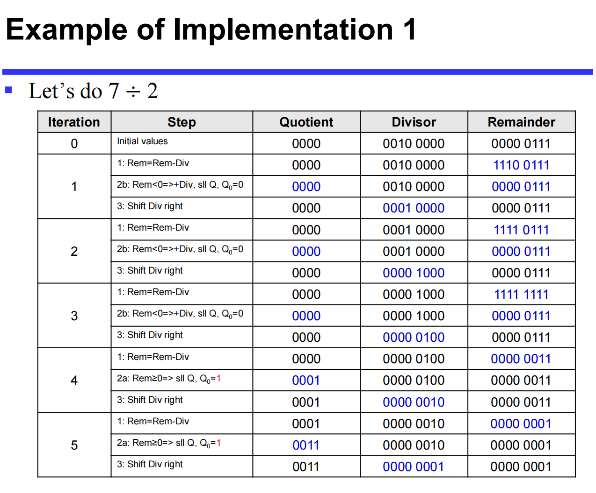
Implementation 2: Optimized Hardware (Similar to Multiplier)
The first implementation is inefficient. It requires a 64-bit ALU, and the initial subtraction is guaranteed to fail (as you cannot shift a '1' into the quotient on the first step).
-
Improvements:
-
Shift the remainder first, then subtract. This avoids the initial useless subtraction but requires an "undo" shift at the end.
-
Instead of shifting the 64-bit divisor right, shift the 64-bit remainder left.
-
Store the accumulating quotient in the right half of the Remainder register (which empties as the dividend is shifted left).
-
-
Hardware Setup: Requires only a 32-bit ALU, a 32-bit Divisor register, and a 64-bit Remainder register.
-
Process:
-
Shift the Remainder register left 1 bit.
-
Subtract the Divisor from the left half of the Remainder.
-
Test Remainder:
-
If \(\ge 0\): Shift the Remainder register left, setting the rightmost bit to
1. -
If \(< 0\): Restore the left half of the Remainder by adding the Divisor. Shift the Remainder register left, setting the rightmost bit to
0.
-
-
Repeat 32 times.
-
Done: Shift the left half of the Remainder right 1 bit to correct the final alignment.
-
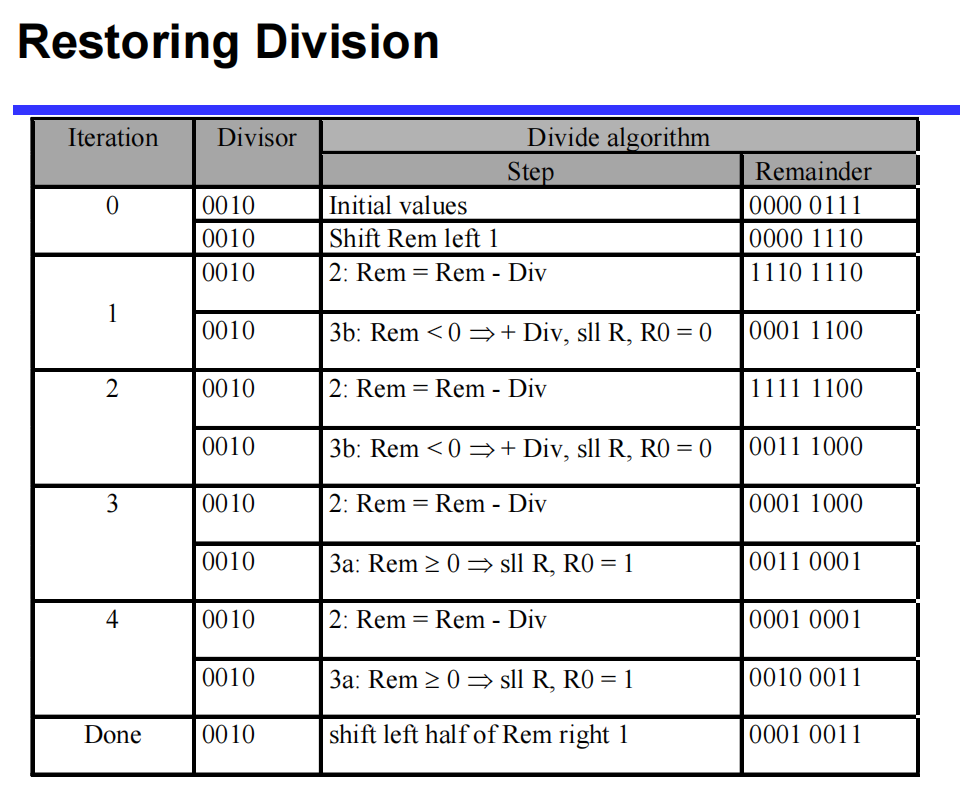
3. Non-Restoring Division
Restoring division is slow because it can take 2 ALU cycles per bit position: one cycle to subtract and check for divisibility, and a second cycle to restore the remainder if the test failed.
Goal: Reduce to 1 ALU cycle per bit by avoiding the restore step.
The Mathematical Principle
Assume in step \(i\), after subtraction, the remainder (\(R_i\)) is negative.
-
In Restoring Division, we restore the remainder: \(R_{restored} = R_i + d\) (where \(d\) is the divisor).
-
In step \(i+1\), we shift left (multiply by 2) and subtract \(d\):
\[ R_{i+1} = 2(R_{restored}) - d = 2(R_i + d) - d = 2R_i + 2d - d = 2R_i + d \] -
Conclusion: If \(R_i < 0\), we do not need to waste a cycle restoring it. Instead, we leave it negative, shift it left (which equals \(2R_i\)), and in the next step, we add the divisor (\(+d\)) instead of subtracting it.
Non-Restoring Algorithm Rules
-
If \(Remainder < 0\): In the next step, shift left and ADD the divisor.
-
If \(Remainder \ge 0\): In the next step, shift left and SUBTRACT the divisor.
-
Advantage: Achieves a strict throughput of 1 bit per ALU cycle.
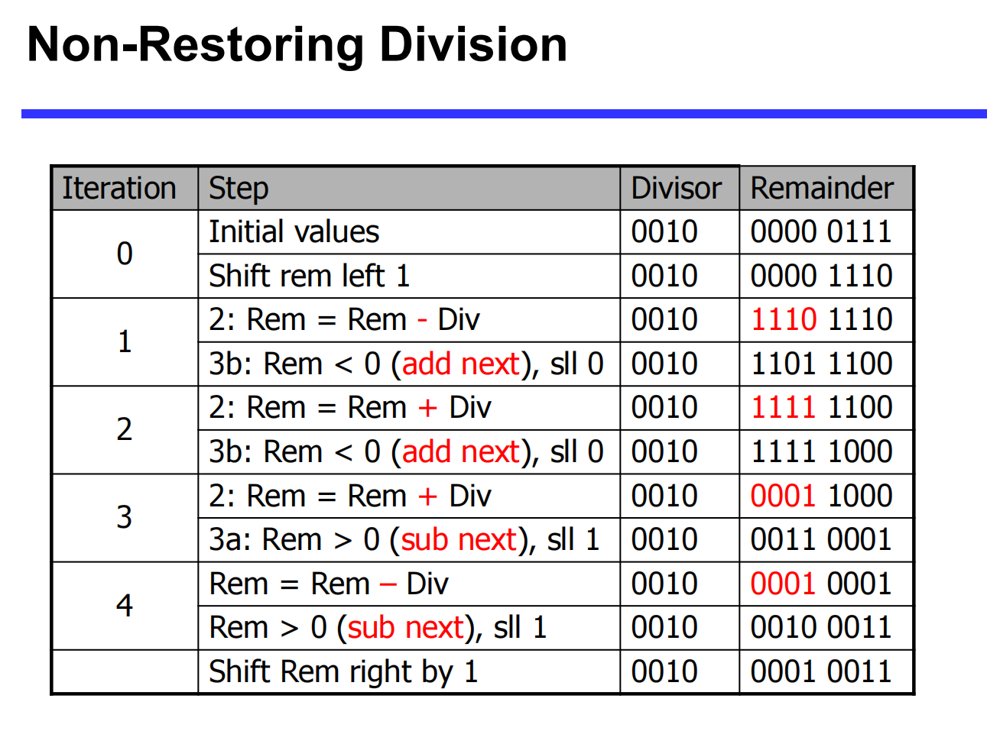
4. Signed Division
Handling negative numbers in division requires specific rules for the quotient and the remainder.
-
Basic Approach:
-
Remember the signs of both the divisor and the dividend.
-
Convert both to positive (unsigned) numbers.
-
Perform standard unsigned division.
-
-
Determining the Final Signs:
-
Quotient: Negate the quotient if the original signs of the operands disagree (i.e., one is positive, one is negative). If they are the same, the quotient remains positive.
-
Remainder: The correctly signed division algorithm dictates that the sign of a non-zero remainder must always match the sign of the dividend.
-
Floating-Point Operations
1. Floating-Point Addition
Floating-point addition is more complex than integer addition because the decimal/binary points must be aligned before the significands (fractions) can be added.
The 4-Step Algorithm
-
Alignment: Compare the exponents of the two numbers. Shift the significand of the smaller number to the right until its exponent matches the larger exponent. (Note: Shifting right may cause truncation of lower bits).
-
Addition: Add the properly aligned significands.
-
Normalization: Normalize the sum. This may involve:
-
Shifting right and incrementing the exponent (if there was a carry-out).
-
Shifting left and decrementing the exponent (if there were leading zeros).
-
Check for Over/Underflow: If the exponent exceeds the representable range, trigger an exception.
-
-
Rounding: Round the significand to the appropriate number of bits for the system's precision.
- Renormalization Check: If rounding causes the result to become unnormalized, loop back to Step 3.
Addition Examples
Decimal Example (4-digit precision): \(9.999 \times 10^1 + 1.610 \times 10^{-1}\)
-
Align: \(0.01610 \times 10^1 \rightarrow 0.016 \times 10^1\) (Truncation occurs)
-
Add: \(9.999 \times 10^1 + 0.016 \times 10^1 = 10.015 \times 10^1\)
-
Normalize: \(1.0015 \times 10^2\)
-
Round: \(1.002 \times 10^2\)
Binary Example: \(0.5_{10} + (-0.4375_{10})\)
-
Convert to binary: \(1.000_2 \times 2^{-1}\) and \(-1.110_2 \times 2^{-2}\)
-
Align: Shift the smaller exponent right: \(-1.110_2 \times 2^{-2} \rightarrow -0.111_2 \times 2^{-1}\)
-
Add: \(1.000_2 \times 2^{-1} + (-0.111_2 \times 2^{-1}) = 0.001_2 \times 2^{-1}\)
-
Normalize: \(0.001_2 \times 2^{-1} \rightarrow 0.010_2 \times 2^{-2} \rightarrow 0.100_2 \times 2^{-3} \rightarrow 1.000_2 \times 2^{-4}\)
-
Round: \(1.000_2 \times 2^{-4}\) (equals \(0.0625_{10}\))
2. Floating-Point Multiplication
Multiplication of floating-point numbers handles the significands and the exponents separately: \((s_1 \cdot 2^{e_1}) \cdot (s_2 \cdot 2^{e_2}) = (s_1 \cdot s_2) \cdot 2^{e_1 + e_2}\)
The 5-Step Algorithm
-
Add Exponents: Add the biased exponents of the operands. To avoid double-counting the bias, subtract the bias from the sum to get the new biased exponent:
$$Exp_{new} = Exp_1 + Exp_2 - Bias $$
-
Multiply Significands: Multiply the fraction portions.
-
Normalize: Normalize the product if necessary (usually shifting it right and incrementing the exponent). Check for overflow or underflow.
-
Rounding: Round the significand to the appropriate number of bits. If rounding un-normalizes the result, loop back to Step 3.
-
Sign: Set the sign of the product. If the original signs are the same, the result is positive (\(0\)). If they differ, the result is negative (\(1\)).
Multiplication Examples
Decimal Example: \(1.110 \times 10^{10} \times 9.200 \times 10^{-5}\)
-
Add Exponents: \(10 + (-5) = 5\)
-
Multiply Significands: \(1.110 \times 9.200 = 10.212 \rightarrow 10.212 \times 10^5\)
-
Normalize: \(1.0212 \times 10^6\)
-
Round: \(1.021 \times 10^6\)
-
Sign: Both positive \(\rightarrow +1.021 \times 10^6\)
Binary Example: \(0.5_{10} \times -0.4375_{10}\) (\(1.000_2 \times 2^{-1}\) by \(-1.110_2 \times 2^{-2}\))
-
Add Exponents: \(-1 + (-2) = -3\).
- Using Bias (127): \((-1 + 127) + (-2 + 127) - 127 = 126 + 125 - 127 = 124\) (which represents \(-3\)).
-
Multiply Significands: \(1.000_2 \times 1.110_2 = 1.110000_2 \times 2^{-3}\)
-
Normalize: \(127 \ge -3 \ge -126\), no over/underflow. Result is already normalized.
-
Round: \(1.110_2 \times 2^{-3}\)
-
Sign: Positive \(\times\) Negative = Negative \(\rightarrow -1.110_2 \times 2^{-3}\) (equals \(-0.21875_{10}\))
3. Floating-Point Division (Brief)
The steps for division are analogous to multiplication but inverted:
-
Subtraction of exponents (with bias correction).
-
Division of the significands.
-
Normalization.
-
Rounding.
-
Sign determination (same logic as multiplication).
4. Floating-Point Arithmetic Hardware
-
Complexity: FP hardware is significantly more complex than standard integer hardware. An FP multiplier is of similar complexity to an FP adder, but it uses a multiplier for significands instead of an adder.
-
Cycle Time Limitations: Completing an FP operation in a single clock cycle would take too long. A slower clock cycle to accommodate FP operations would severely penalize the performance of all other basic instructions.
-
Multi-Cycle & Pipelining: Because of the latency, FP operations usually take several clock cycles to complete. To maintain high throughput, modern FP adders and multipliers are typically pipelined.
-
Versatility: A comprehensive FP arithmetic unit handles addition, subtraction, multiplication, division, reciprocals, square roots, and conversions between FP and integer formats.
5. Parallelism and Computer Arithmetic: Associativity
In strict mathematics, addition is associative: \(x + (y + z) = (x + y) + z\).
However, floating-point arithmetic is NOT strictly associative due to precision limits and truncation during alignment.
Demonstration Example:
Let \(x = -1.5 \times 10^{38}\), \(y = 1.5 \times 10^{38}\), and \(z = 1.0\).
-
Scenario A: \(x + (y + z)\)
-
First evaluate \((y + z)\): \(1.5 \times 10^{38} + 1.0 = 1.5 \times 10^{38}\) (The \(1.0\) is completely lost because the system cannot maintain enough significant digits to capture a difference of \(1.0\) against \(10^{38}\)).
-
Next evaluate \(x + \text{Result}\): \(-1.5 \times 10^{38} + 1.5 \times 10^{38} = \textbf{0.0}\)
-
-
Scenario B: \((x + y) + z\)
-
First evaluate \((x + y)\): \(-1.5 \times 10^{38} + 1.5 \times 10^{38} = 0.0\)
-
Next evaluate \(\text{Result} + z\): \(0.0 + 1.0 = \textbf{1.0}\)
-
Conclusion: Because \(0.0 \neq 1.0\), the order of operations matters greatly in parallel computing when dealing with floating-point limits. Code must be carefully structured to avoid catastrophic loss of precision.